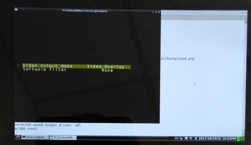
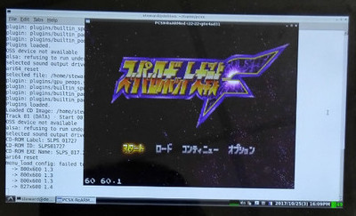

由於預設的PCSX ReARMed在GPD Win掌機(Debian系統下)，只能使用SDL介面，意思就是只能使用PS1遊戲的Native Resolution，因此，像是超級機器人大戰F就只能使用320x240的解析度，這樣的缺點就是畫面太小，因為解析度只有320x240，於是，司徒嘗試修改判斷設定的地方，看看是否有機會把畫面做等比放大，所幸修改後可以成功運行，修改位置如下所示
frontend/libpicofe/plat_sdl.c +246
plat_sdl_overlay->hw_overlay = 1;
if (plat_sdl_overlay->hw_overlay)
overlay_works = 1;
只要強制把hw_overlay改成1即可使用Video Overlay功能
完成

